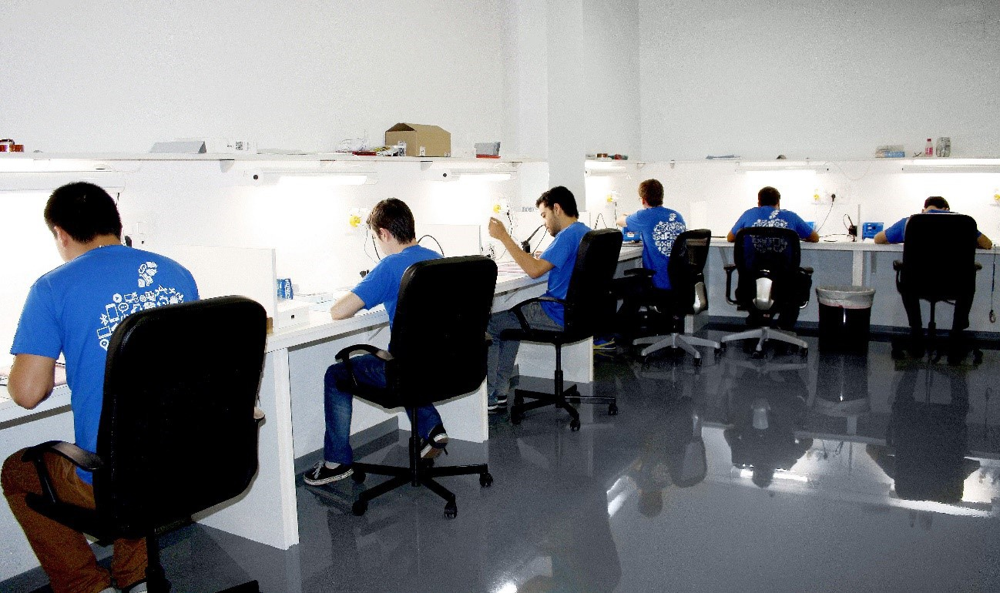
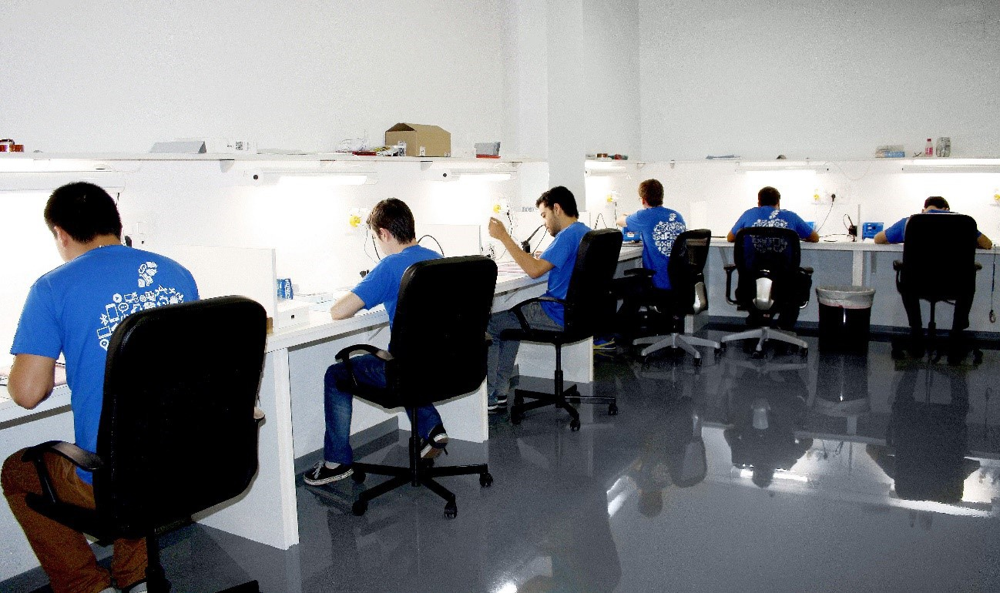

Sobre Nosotros
Reparar mac Barcelona
Reparar un equipo Mac en Barcelona, en FixZone Store disponemos de un taller de reparación con profesionales con años de experiencia reparando equipos Apple.
Reparar un equipo Mac en Barcelona, en FixZone Store disponemos de un taller de reparación con profesionales con años de experiencia reparando equipos Apple.
Si deseas reparar Mac Barcelona, en FixZone te podemos ayudar, somos servicio técnico Apple con profesionales con más de 10 años de experiencia en la reparación de equipos Apple. Todas nuestras reparaciones, son realizadas en nuestro taller de reparación ubicado en Barcelona. Si lo deseas puedes acercarte a entregar y recoger tu aparato. Somos expertos en reparación de equipos Mac, Macbooks, iMacs, Mac Mini, iPad, etc. Cualquier arreglo puede hacerlo nuestro taller, que principalmente se dedica a la reparación de placas base y tarjetas gráficas. Cualquier daño en la placa se puede reparar el 98% de las veces, en caso contrario optaríamos por la substitución de la pieza aunque eso hace que la reparación sea más cara.
Pedro atenderá cualquier problema que tenga tu ordenador como si fuera el suyo propio, y el equipo dará el máximo para entregarte tu ordenador perfecto pase lo que pase. Disponemos de un seguro que nos permite ofrecerte 12 meses de garantía en todas las reparaciones que realizamos, siempre con piezas originales y plenamente garantizadas para que alargues la vida de tu ordenador Mac.
Si vives en Barcelona o cercanías dispones de la posibilidad de traernos y recoger tu equipo en el taller, este taller dispone de oficina para recibir y hacer el pago en metálico, si así lo deseas, sobre todo lo hace la gente con Macbooks o equipos más pequeños, dada la incomodidad de transportar equipos grandes, que son más fáciles de entregar al mensajero y olvidarse, ya que los aparatos bajo nuestra custodia están asegurados 100%. Si vives en otra parte de España no creas que supone un problema, incluso fuera de la península, nuestros mensajeros pasarán a recoger tu ordenador Mac allá donde estés sin importar si es Macbook o iMac y te lo devolverán reparado y listo para que puedas disfrutar de el otra vez sin necesidad de comprarte uno nuevo.
Hay cosas que no cambian, y nuestra garantía de satisfacción total tampoco, si la reparación es imposible o no estás satisfecho con el servicio te devolvemos el producto Apple sin cobrarte la reparación. Consulta nuestros precios contactando con nosotros en el teléfono que aparece en la cabecera o a través del formulario de contacto (mail consultas@fixzone.es), será un placer atender cualquier cuestión que tengas.